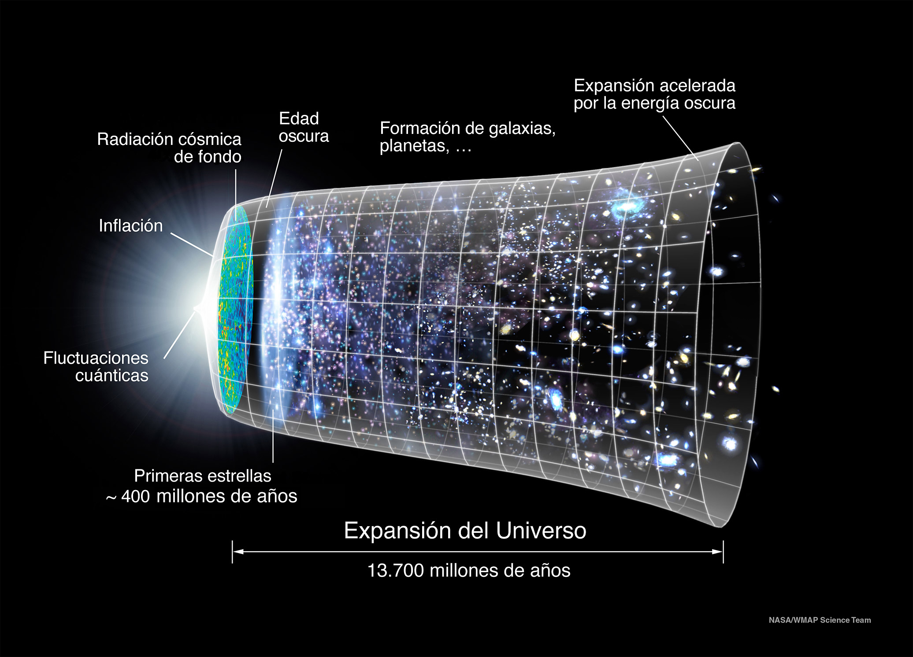

Planetas y cuerpos fuera del Sistema Solar

Sol - Tierra
150 millones de km → la luz tarda 8 minutos en llegar.
Tamaño del Universo
Se estima que tiene unos 93.000 millones de años luz de diámetro.
Edad
El universo tiene aproximadamente 13.800 millones de años.
Galaxia
Nuestra galaxia, la Vía Láctea, contiene entre 100.000 y 400.000 millones de estrellas.
Preguntas para reflexionar
¿Hay vida en otros planetas?
Aún no se ha encontrado evidencia concluyente, pero el universo es tan inmenso que científicos consideran probable que exista vida en alguna otra parte.
¿Cómo terminará el universo?
Existen varias teorías: Gran Congelación, Gran Desgarro o Gran Colapso. Lo que ocurra dependerá de la energía oscura y la expansión del espacio.